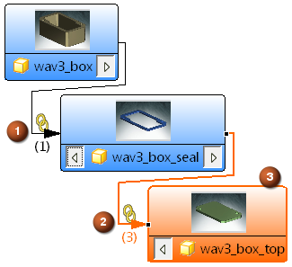
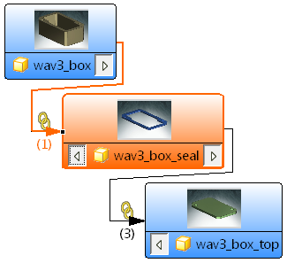
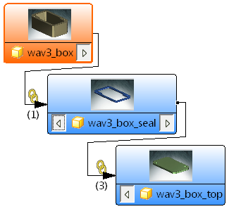
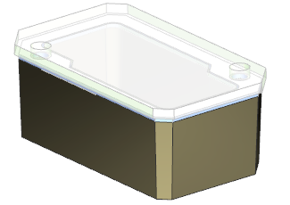

查找部件间关系
-
点击装配工具条上的关系浏览器
 。
。图表将显示：
-
一个箱体与箱体密封垫之间的 WAVE 链接
-
三个箱体密封垫与箱体顶盖之间的 WAVE 链接
-
将选中当前工作部件并高亮显示为橙色

注释
密封垫以及顶盖的缩略图并不显示在您的关系浏览器中，这是因为您尚未保存部件。
在关系选项卡中，您可以看到箱体顶盖及其相关链接的父级以及子级关系，注意与部件导航器中相同的三个链接的复合曲线。
-
-
在部件间关系视图中，点击 wav3_box_seal。
图表现在将把箱体密封垫显示为橙色。

在关系选项卡中，您可以看到箱体密封垫及其相关链接之间的父级与子级关系。
-
在部件间关系视图中，右击 wav3_box 并选择设为工作部件。

-
关闭关系浏览器。
在装配导航器中，您可以看到现在箱体是工作部件。
